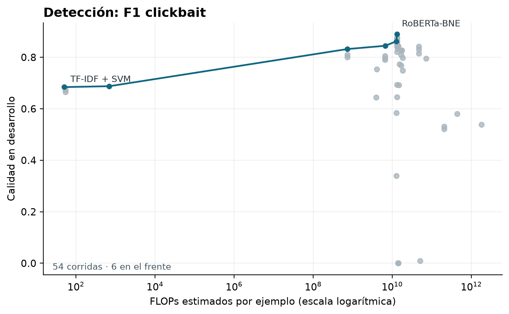
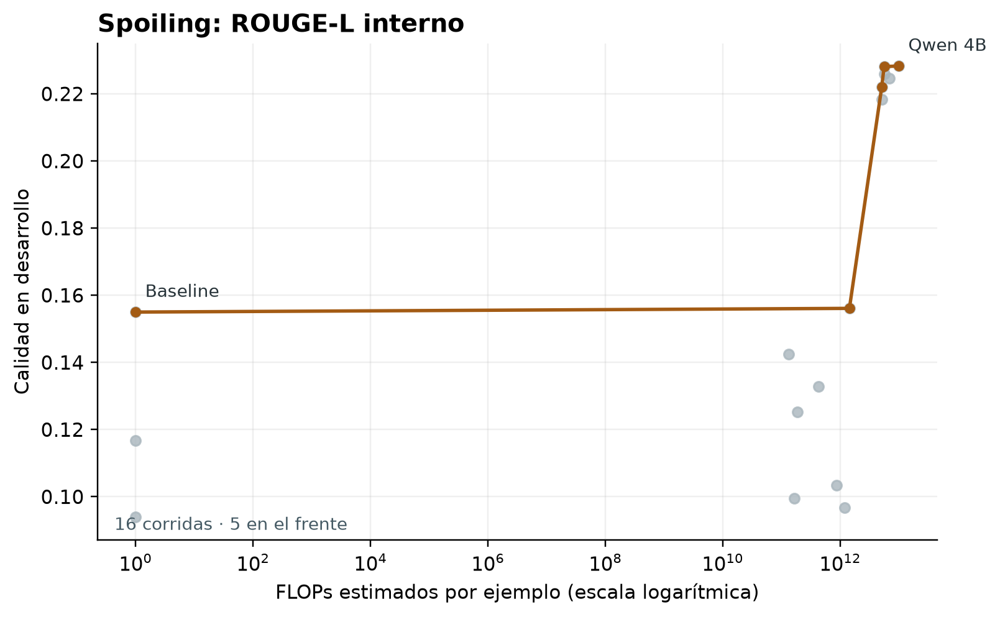
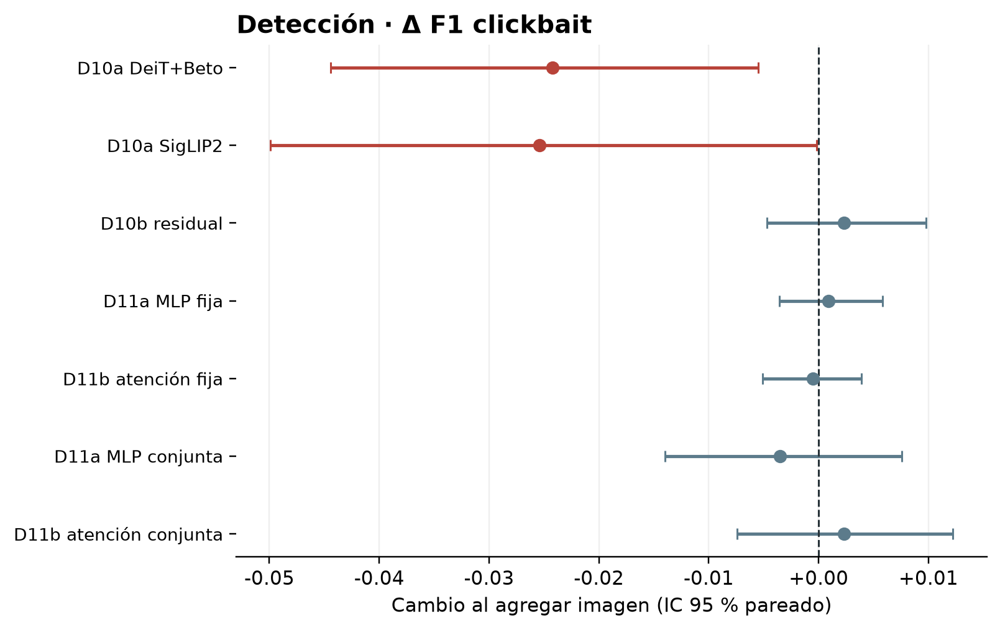
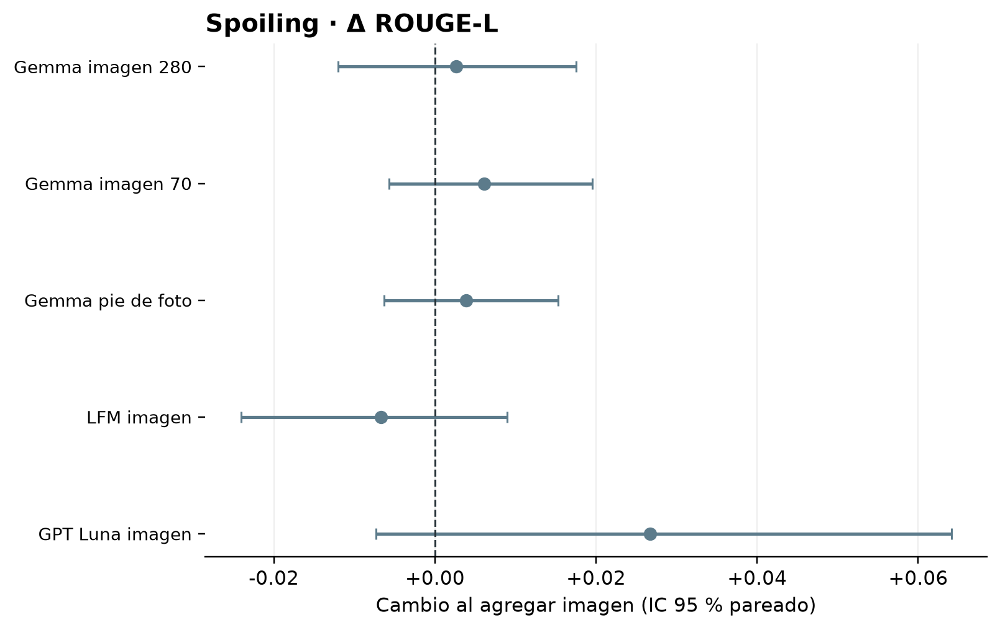

Panorama del registro
El registro reúne configuraciones exploratorias. Los gráficos de calidad y cómputo incluyen solo las corridas con FLOPs estimados y protocolos comparables dentro de cada tarea.
Detección
F1 de la clase clickbait. Las filas de desarrollo (700 ejemplos) y las de predicción fuera de fold (3.500 ejemplos) responden a protocolos diferentes y no forman una clasificación única.
Resultados seleccionados
Las cinco configuraciones resumidas en la tabla del manuscrito.
| Configuración | Ejemplos | Protocolo | F1 clickbait |
|---|---|---|---|
| TF-IDF + SVM lineal | 700 | Desarrollo | 0,6646 |
| RoBERTa-BNE, clases ponderadas | 700 | Desarrollo | 0,8900 |
| D10b, solo texto | 3.500 | OOF CV5 | 0,8500 |
| D10b, texto + imagen | 3.500 | OOF CV5 | 0,8523 |
| D11a, fusión MLP fija | 3.500 | OOF CV5 | 0,8455 |
Calidad frente a cómputo
El frente conecta las configuraciones no dominadas del registro. Los FLOPs se estiman por ejemplo.

Spoiling
Las métricas ROUGE-L y BERTScore citadas aquí se calcularon localmente en desarrollo. Las corridas generativas aún no tienen una evaluación final en prueba.
Heurística oficial replicada
BERTScore: 0,6533.
Qwen 3.5 4B
BERTScore: 0,6996.
GPT-5.6 Luna, sin imagen
BERTScore: 0,7273. Costo aproximado: USD 0,327 por 1.000 ejemplos en estas condiciones.
GPT-5.6 Luna, con imagen
BERTScore: 0,7350. Costo aproximado: USD 0,636 por 1.000 ejemplos en estas condiciones.
Comparación pareada de Luna: la diferencia de ROUGE-L al añadir imagen fue +0,0267, con intervalo de confianza del 95 % [−0,0073; 0,0641]. El intervalo incluye cero.
Calidad frente a cómputo local
La figura muestra ROUGE-L local y FLOPs estimados. Los servicios por API quedan fuera porque no tienen FLOPs comparables.

Aporte de la imagen
Diferencias pareadas al agregar imagen o pie de foto. El cero marca ausencia de cambio; los intervalos que lo cruzan no muestran una mejora concluyente en estas configuraciones.
Fusión MLP residual
IC del 95 % [−0,0047; 0,0098] sobre predicciones OOF. El intervalo incluye cero.
DeiT + Beto
IC del 95 % [−0,0444; −0,0055] sobre 3.500 predicciones OOF. La variante con SigLIP2 también disminuyó: −0,0254.
Detección: diferencia de F1
Comparaciones pareadas entre texto e imagen en los ejemplos disponibles.

Spoiling: diferencia de ROUGE-L
Imagen o pie de foto frente al modelo sin información visual.

Cómo interpretar esta referencia
Protocolos y selección
Varias configuraciones se eligieron a partir de desarrollo. Sus mejores cifras pueden ser optimistas. Los resultados de desarrollo, prueba y OOF se presentan con su protocolo para evitar comparaciones directas impropias.
Alcance de la evaluación visual
La validación visual no separa duplicados, D11 se ejecutó con una sola semilla y la disponibilidad de imágenes varía. El test oficial de detección no incluye imágenes ni artículos.
Métricas y costo
ROUGE-L y BLEU locales no reproducen exactamente la evaluación oficial de spoiling. Los FLOPs estimados de modelos locales no se comparan directamente con el costo monetario de servicios por API.
Trabajo pendiente
La comparación de calidad y costo aún no incorpora obtención de imágenes, latencia total ni evaluación humana de spoilers. Estos resultados sirven como línea de referencia para evaluar el marco de agentes.
Fuente: capítulo «Resultados del estudio de base» del manuscrito público y las cuatro figuras reproducidas allí. Este panel resume resultados agregados; el detalle de corridas y respuestas no forma parte de esta publicación.
OOF CV5: predicciones fuera de fold en validación cruzada de cinco particiones. IC: intervalo de confianza.